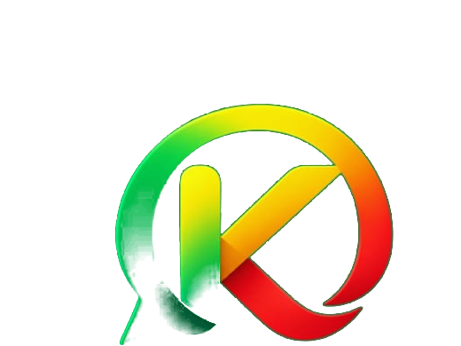

💬
Sohbeta Kurdî
Bi hevalên xwe re bi zimanê Kurdî biaxivin.

KurdChat, ji bo axaftina bi zimanê Kurdî hatiye çêkirin. Bi hêsanî bi hevalên xwe re biaxivin û peyamên xwe bi ewlehî bişînin.
Versiyon 1.0 · Android · Belaş
Armanca KurdChat ew e ku axaftina bi zimanê Kurdî hêsan, xweş û erişîbar bike.
Bi hevalên xwe re bi zimanê Kurdî biaxivin.
Peyamên xwe bi rêya servera KurdChat bi zû bişînin.
Em li ser parastina daneyên bikarhêneran dixebitin.
KurdChat projeyek e ku ji bo çêkirina platformeke sohbetê ya bi zimanê Kurdî hatiye amadekirin. Ev malper jî cihê fermî ye ku bikarhêner dikarin li vir agahdariya derbarê sepanê û guhertoyên nû bistînin.
Sepona Androidê daxîne û bi hevalên xwe re biaxive.
Ev beşa destpêkê ye. Berî ku KurdChat ji bo bikarhênerên giştî were belavkirin, dê rênivîsa taybetiyê ya bêkêmasî li vir were zêdekirin.